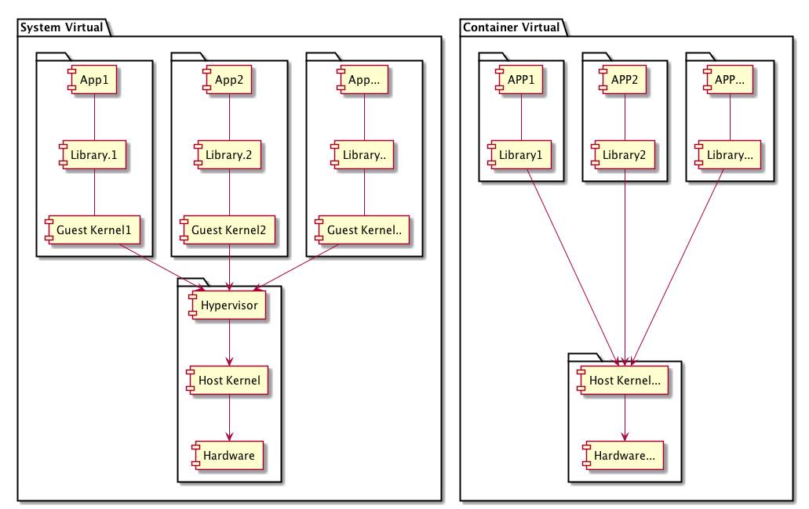

初识docker
1.什么是docker
Docker 是一个开源项目，诞生于 2013 年初，最初是 dotCloud 公司内部的一个业余项目。它基于 Google 公司推出的 Go 语言实现。 项目后来加入了 Linux 基金会，遵从了 Apache 2.0 协议，项目代码在 GitHub 上进行维护。
Docker 自开源后受到广泛的关注和讨论，以至于 dotCloud 公司后来都改名为 Docker Inc。Redhat 已经在其 RHEL6.5 中集中支持 Docker；Google 也在其 PaaS 产品中广泛应用。
Docker的主要目标：
通过对应用组件的封装、分发、部署、运行等生命周期的管理，达到应用级别的一次封装，到处运行；
小贴士：这里的应用组件，可以是WEB应用，也可以是一套数据库服务，甚至可以是一个操作系统编译器
2.为什么使用docker
Docker容器虚拟化的优点：
- 环境隔离；
通过cgroups和namesapce进行实现资源隔离，实现一台机器运行多个容器互不影响。 - 更快速的交付部署；
使用docker，开发人员可以利用镜像快速构建一套标准的研发环境；开发完成后，测试和运维人员可以直接通过使用相同的环境来部署代码。Docker可以快速创建和删除容器，实现快速迭代，大量节约开发、测试、部署的时间。并且，各个步骤都有明确的配置和操作，整个过程全程课件，使团队里更容易理解应用创建和工作的过程。 - 更高效的资源利用；
docker容器的运行不需要额外的虚拟化管理程序的支持，它是内核级的虚拟化，可以实现更高的性能，同时对资源的额外需求很低。 - 更易迁移扩展；
docker容器几乎可以在任意的平台上运行，包括乌力吉、虚拟机、公有云、私有云、个人电脑、服务器等，这种兼容性让用户可以在不同平台之间轻松的迁移应用。 - 更简单的更新管理。
使用Dockerfile,只需要小小的配置修改，就可以替代以往的大量的更新工作。并且所有修改都是以增量的方式进行分发和更新，从而实现自动化和高效的容器管理。
3.虚拟化与docker
虚拟化定义：虚拟化是一种资源管理技术，是将计算机的各种实体资源，如服务器、网络、内存及存储等，予以抽象、转换后呈现出来，打破实体结构间的不可切割的障碍，使用户可以比原本的配置更好的方式来应用这些资源。这些资源的新虚拟部分是不受现有资源的架设方式，地域或物理配置所限制。一般所指的虚拟化资源包括计算能力和数据存储。

系统虚拟化，Hypervisor Virtualization，全虚拟化。在 Host 中通过 Hypervisor 层实现安装多个 GuestOS，每个 GuestOS 都有自己的内核，和主机的内核不同，GuestOS 之间完全隔离。
容器虚拟化，Operating System Virtualization ，使用 Linux 内核中的 namespaces 和 cgroups 实现进程组之间的隔离。是用内核技术实现的隔离，所以它是一个共享内核的虚拟化技术。
容器虚拟化没有 GuestOS，使用 Docker 时下载的镜像，只是为运行 App 提供的一个依赖的环境，是一个删减版本的系统镜像。一般情况下系统虚拟化没有容器虚拟化的运行效率高，但是系统安全性高很多。